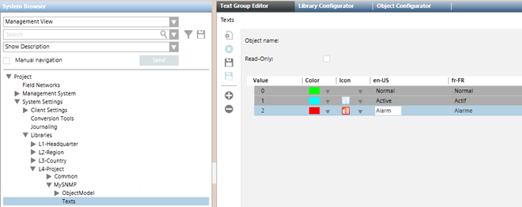

Configure SNMP Text Groups for the Custom Device
During the configuration of a custom SNMP device you may want to associate the different SNMP values with descriptive texts to help the operators to understand the different conditions in the system.
- The Texts folder is available under the SNMP library. If not, see Adding Blocks to a Library.
- In System Browser, select Project > System Settings > Libraries > [L4-Project] or [L3-Country] or [L2-Region] > Global > SNMP > Texts.
- The Text Group Editor tab displays.
- Configure the text group entries as follows:
a. Click Add new row .
.
b. In the new row, add a Value and a descriptive text for en-US and any other supported language.
c. Click OK.
d. Repeat the previous substeps to add all required texts. - Click Save
 .
. - In the Save Object As dialog box, do the following:
a. Enter the Object name.
b. In the Name field, enter for example, TxG_MySNMP_Events.
c. In the Description field, enter for example, MySNMP Events.
d. Click OK.
NOTE: It is important to follow specific syntax rules when saving a text group:
- The Object name and Name must have the following prefix: TxG_.
- The prefix can be followed by a label to represent the device name or discipline name (for example, MySNMP or SNMP).
- End the text with a label that indicates the group type (for example, Events).
- In the Description field, you can enter free text. - The new SNMP text group object is added to System Browser.
- Exit and launch again the Desigo CC client application. In this way it is possible to view the new text group in the areas where it can be used.
NOTE: If the syntax of the text group name is incorrect, Desigo CC cannot load the text group where it is referenced (for example, in the DPE Details configuration).

Field | Description |
Value | Enter the value that the management station reads from the SNMP point. Basically, it indicates the real condition of the SNMP point using a numeric value (the variable is of the Unsigned Integer type). |
Color | Select the color to associate to the text when the point reaches the value set. This field is optional. |
Icon | Select the icon to associate to the text and to the point status when the SNMP reaches the value set. This field is optional. |
en-US | Enter the text in English-US. Unless differently configured, the English language is always present in projects (mostly if an HQ project template is restored). |
Other languages | Enter the text for the second language. Each project can have a second configurable language (French in the above example). |
For more details about text groups, see the relevant reference section.